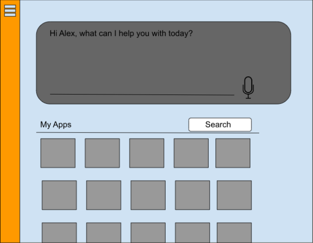

Pocket Teacher
Pocket Teacher, a local edTech start up here in Orange County, contacted me about building a prototype for their company. They were looking for investors, so a prototype was the next step to building their business.
the problem.
The US spends about $56 billion a year on education technology (EduTech), particularly since the COVID-19 pandemic and the explosion of remote learning.
A student's home life has been proven to have a high impact on the student's learning capabilities and performance in school, and as the flipped classroom model has grown with programs such as Google Classroom, so have inequalities in education.
With OpenAI's growing popularity (considering the integration into Bing and Google's expected competitor), tech-savvy and well-resourced students will have an unfair advantage over their peers. With Pocket Teacher, administrators will have the ability to mitigate that disparity and to better support their students in the tech world.
Essentially, I wasn't just designing for the financial future of the company—I was also designing for Pocket Teacher's future students. By obsessing over the user experience, ease of use, and student safety, Pocket Teacher could transform the world of EduTech.

goals.
I had about a week to complete this project, and as the sole designer, I was tasked with building the initial app.
My Design Objectives:
- Build initial wireframes.
- Conduct user testing and present to the Project Manager.
- Create a style guide.
- Build the final prototype with the users' and the Project Manager's feedback.
The team had one initial wireframe to accompany their ideas.
I used this to jumpstart my design process.
designing.
The team's wireframe reminded me of Instructure's app, Canvas, and I also looked at Zoom's SSO feature on their login page. Pocket Teacher's team wanted to incorporate the SSO login since their app would be distributed by a school's administration.
Lastly, I did some experimenting with ChatGPT to investigate how it answered questions and how it formatted them.
After gaining some inspiration and conducting my casual comparitive analysis, I needed to get in the mind of my users—the paths they might take, the different pages on the app they could visit. So, I created a site map.
This also helped me to keep track of all the different wireframes I'd need to draft, and from here, I was able to start my initial prototyping.
Low/Mid-Fidelity Wireframes


iterating.
It was time to start getting some feedback. I met with my Project Manager (also the founder of the startup) to get his thoughts.
Due to the project's timeframe, I was not asked to complete any official user testing. Still, I created a prototype for my Project Manager to tap through, and I also asked for some general feedback from family and friends.
From this meeting, I learned that the focus of the app was the chat bot powered by OpenAI. Therefore, I'd need to reflect that in my design and make the chat bot more prominent on the dashboard. I also gained some clarity on the purpose of the modules, and I got a better idea of what they would look like in the finished version.
The last purpose of this meeting was to figure out the style guide. The Project Manager already had a color scheme in mind, but would defer to my research on the most appropriate color scheme for an education app.
the style guide.
To investigate the best possible style, I researched the impact color can have on a student's psychology. I also tested multiple color schemes, and after running them by the Product Manager, we found our final style guide. I then applied this to the high-fidelity wireframes.

High-Fidelity Wireframes
.png)
.png)


conclusions.
As technology develops, so will the needs of students. OpenAI has become notorious for plagiarism and cheating opportunities, but with apps like Pocket Teacher, it has the chance to support students' learning instead of hinder it.
To determine the app's success, I looked to the future. It is still very much in the development phase, but as the team meets with investors, I will be able to measure the efficacy of my design based on their feedback (i.e. whether they decide to invest or not). Further success will be determined by the amount of schools that decide to integrate Pocket Teacher into their curriculum as well as partnership opportunities, such as with Khan Academy.